Una granja hortícola y ganadera en Santander (Colombia) opera hoy "a ojo": se riega por horario y no por necesidad, el estrés térmico del invernadero y del ganado se detecta cuando ya hay daño, nadie sabe con certeza cuánta agua queda en el tanque ni si hubo intrusos en la noche, y no existe un registro histórico que permita decidir con datos. Antes de invertir en sensores para toda la finca, el productor necesita un lugar donde probar reglas de riego, alertas y automatismos sin arriesgar el cultivo ni los animales.
AgroCraft es una plataforma IoT a la medida, desplegada en la nube con URL propia, cuyo gemelo digital es un mundo de Minecraft. Cada parcela, el tanque, el invernadero, el silo, el perímetro y el corral de vacas existen como estructuras del juego que se comportan según un modelo físico simple y reciben el clima real de Bucaramanga: si llueve en la ciudad llueve en el mundo y el tanque se recarga; la evapotranspiración real seca el suelo de las parcelas; la temperatura y la humedad reales calientan el invernadero y generan estrés térmico en el rebaño. Los bloques del juego son sensores y actuadores: publican telemetría por MQTT y obedecen comandos de la plataforma, y lo que hace un jugador dentro del mundo (mover una palanca, cosechar) también llega a la plataforma.
Alrededor del gemelo hay dispositivos de las otras tres clases que pide el proyecto: reales (el PC del operario como gateway y su celular), API (clima, calidad del aire, suelo y un pronóstico operativo) y DataSet (un invernadero real de Wageningen y un medidor eléctrico doméstico, reproducidos como si midieran hoy).
Ventana analizada: 11 Nov 2026 01:10 – 17 Nov 2026 01:05 (hora Colombia) (6.0 días), 170 944 mensajes de telemetría de 17 dispositivos, más los comandos, respuestas, eventos y alertas de ese periodo.
La arquitectura conserva las cuatro capas vistas en clase (dispositivo, telecomunicaciones, plataforma y operación), pero reemplaza la plataforma gestionada (Azure IoT Central, usada en los laboratorios) por una plataforma propia sobre una máquina virtual de Azure, construida con servicios de código abierto y un servicio de control escrito para el proyecto.
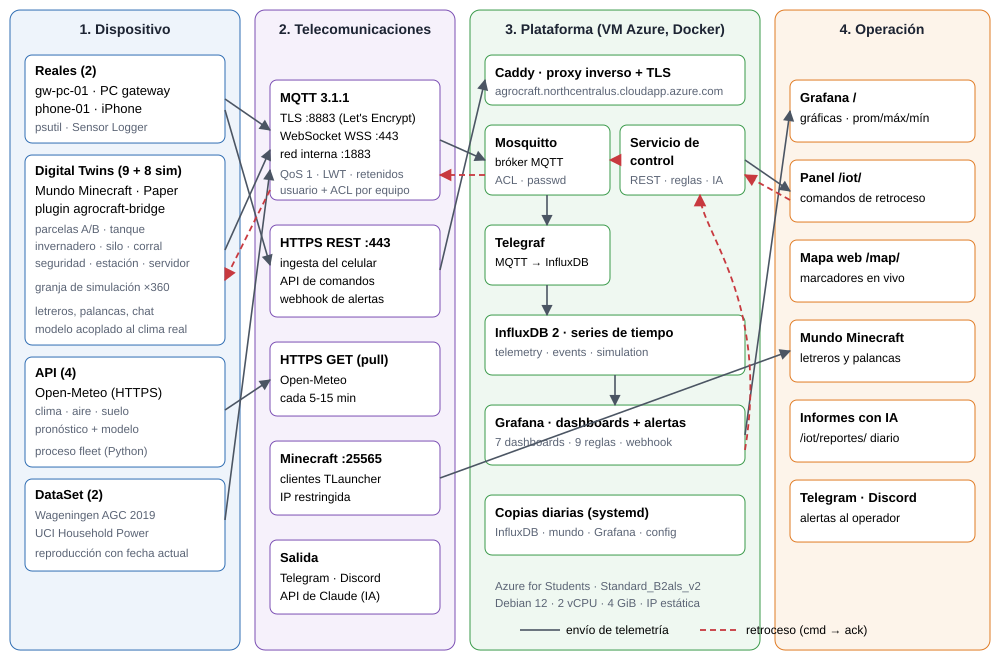
| Capa | Componentes | Responsabilidad |
|---|---|---|
| Dispositivo | 17 dispositivos: 2 reales, 9 gemelos en Minecraft (más 8 de la granja de simulación), 4 de API y 2 de DataSet | Medir, actuar y responder comandos |
| Telecomunicaciones | MQTT 3.1.1 (TLS 8883, WebSocket seguro en 443, red interna), AMQP 0-9-1 (RabbitMQ), HTTPS REST, HTTPS GET a Open-Meteo | Transportar telemetría y comandos con cifrado y autenticación |
| Plataforma | Caddy, Mosquitto, RabbitMQ, Telegraf, InfluxDB, Grafana, servicio de control (reglas, detector de anomalías, IA), servidor Paper con el plugin AgroCraft | Recibir, autenticar, almacenar, procesar, decidir |
| Operación | Grafana, centro de datos (granja 3D, panel de control, informes, mapa), mundo de Minecraft, informes con IA, Telegram y Discord | Visualizar, alertar y operar |
agro/<clase>/<dispositivo>/telemetry con QoS 1, marca de tiempo y número
de secuencia (seq), usando su propio usuario y clave del bróker.class
y device; los comandos, respuestas, eventos y estados van a una segunda medición (events) y la
granja de simulación a una tercera (simulation).El medidor de energía (ds-energia) publica su telemetría por AMQP 0-9-1 en el exchange agro.telemetry de RabbitMQ, con confirmación del bróker; Telegraf la consume de una cola durable. Si RabbitMQ no responde, la lectura sale por MQTT. El celular no habla MQTT: hace POST por HTTPS al servicio de control, que lo representa ante el bróker
con su propio cliente MQTT. Los dispositivos de API consultan Open-Meteo por HTTPS y publican por MQTT.
/iot/), una regla de la nube o una alerta de Grafana pide un comando al servicio de control.agro/<clase>/<dispositivo>/cmd con un identificador (cmd_id) y su origen.ack con el mismo cmd_id y publica su nuevo state
(retenido), que queda registrado y aparece como marca en las gráficas.Certificado TLS de Let's Encrypt renovado automáticamente (compartido por Caddy y Mosquitto), bróker sin acceso anónimo con usuario y ACL por dispositivo, comandos protegidos con usuario de operador, ingesta del celular con token, secretos solo en la VM (fuera del repositorio), SSH solo con llave, puerto de Minecraft restringido por IP y lista blanca de jugadores, y copia de seguridad diaria.
Diecisiete dispositivos en las cuatro clases pedidas. Para cada uno se indica el sensor real que representa (o la fuente de datos), el rango de su hoja de datos y el rango observado durante la captura en sus variables principales.
| Dispositivo | Clase | Qué es | Sensor de referencia / datasheet | Rango observado | Muestras | Protocolo |
|---|---|---|---|---|---|---|
gw-pc-01 |
Real | PC del operario como gateway de campo | psutil / netsh (CPU 0-100 %, RAM 0-100 %, latencia TCP) | cpu_pct: 0.0–100.0 ram_pct: 42.7–99.0 link_rtt_ms: 89.7–12 177.6 |
15 751 | MQTT 3.1.1 / TLS 8883 |
phone-01 |
Real | iPhone del operario (Sensor Logger) | Barómetro 300-1100 hPa · micrófono -160-0 dBFS · acelerómetro ±8 g | pressure_hpa: 894.7–900.4 sound_dbfs: -160.0–-2.4 battery_pct: 5.0–100.0 |
4522 | HTTPS POST → MQTT |
mc-parcela-a |
Twin | Parcela de trigo | Sonda capacitiva v1.2: 0-100 % · BH1750: 1-65535 lx | soil_pct: 25.0–100.0 growth_pct: 0.0–100.0 |
17 423 | MQTT (red interna) |
mc-parcela-b |
Twin | Parcela de zanahoria y papa | Sonda capacitiva v1.2: 0-100 % · BH1750 | soil_pct: 25.0–100.0 growth_pct: 0.0–100.0 |
17 277 | MQTT |
mc-tanque |
Twin | Tanque de 2000 L con bomba | JSN-SR04T: 20-600 cm · YF-S201: 1-30 L/min | level_pct: 16.1–92.4 outflow_lpm: 0.0–7206.3 inflow_lpm: 0.0–31.3 |
17 277 | MQTT |
mc-invernadero |
Twin | Invernadero de vidrio | SHT31: -40-125 °C, 0-100 % HR · BH1750 | temp_c: 19.0–33.3 hum_pct: 44.3–100.0 plant_health_pct: 1.2–100.0 |
17 277 | MQTT |
mc-silo |
Twin | Silo de cosecha | Celda de carga HX711 (0-100 %) | items: 0.0–768.0 fill_pct: 0.0–44.4 |
8642 | MQTT |
mc-seguridad |
Twin | Perímetro | PIR HC-SR501 (3-7 m) · contacto magnético | hostiles_near: 0.0–30.0 | 17 277 | MQTT |
mc-estacion |
Twin | Estación meteorológica del mundo | Pluviómetro de balancín · piranómetro | daylight_lvl: 4.0–15.0 | 8642 | MQTT |
mc-corral |
Twin | Corral automático de vacas | RFID 134 kHz · nivel de comedero · THI (SHT31) | cows_total: 4.0–12.0 thi: 65.5–77.9 welfare_pct: 46.3–100.0 |
15 258 | MQTT |
mc-server |
Twin | Salud del servidor del gemelo | TPS 0-20 · memoria JVM | tps: 15.4–20.0 heap_mb: 243.9–1290.3 |
17 277 | MQTT |
api-clima |
API | Clima real de Bucaramanga | Open-Meteo Forecast (modelos ICON/GFS) | temp_c: 18.8–29.6 hum_pct: 49.0–98.0 radiation_wm2: 0.0–908.0 |
1720 | HTTPS GET → MQTT |
api-aire |
API | Calidad del aire | Open-Meteo Air Quality (CAMS) | pm2_5: 4.1–31.3 us_aqi: 38.0–76.0 uv_index: 0.0–9.8 |
861 | HTTPS GET → MQTT |
api-suelo |
API | Suelo y evapotranspiración | Open-Meteo (ET0 FAO-56) | et0_mm: 0.0–0.2 soil_moist_m3m3: 0.4–0.5 soil_temp_c: 18.2–32.5 |
862 | HTTPS GET → MQTT |
api-pronostico |
API | Pronóstico operativo de la granja | Open-Meteo horario + modelo del gemelo | hours_to_irrigation_a: 1.0–48.0 water_need_24h_l: 0.0–1335.5 thi_stress_hours_24h: 2.0–9.0 |
507 | HTTPS GET → MQTT |
ds-invernadero |
DataSet | Invernadero de referencia | Autonomous Greenhouse Challenge 2019 (5 min) | temp_c: 17.4–30.1 hum_pct: 40.3–93.0 co2_ppm: 409.0–1052.0 |
1731 | MQTT |
ds-energia |
DataSet | Medidor eléctrico | UCI Household Power Consumption (1 min) | power_kw: 0.2–8.7 voltage_v: 225.8–248.9 |
8640 | MQTT |
Por qué el rango observado es más estrecho que el del datasheet. Los sensores de referencia cubren condiciones extremas (por ejemplo, el SHT31 mide de −40 a 125 °C), mientras que el clima de Bucaramanga en noviembre se movió entre 18.8 y 29.6 °C. Los umbrales operativos (riego bajo 35 % de humedad de suelo, ventilación sobre 28 °C, estrés térmico del rebaño sobre THI 72-78) se eligieron dentro del rango del escenario, no del sensor.
Gemelos con modelo. Los gemelos no generan números al azar: el plugin calcula su estado cada
segundo. La humedad del suelo baja 0,5 + 12 × ET0 puntos por hora (ET0 real de Open-Meteo) y sube 120
puntos por hora con el riego, que toma 20 L/min del tanque; la temperatura del invernadero persigue a la
exterior real más una ganancia solar proporcional a la radiación real, que las ventilas abiertas reducen
al 35 %; el índice THI del corral se calcula con la temperatura y la humedad reales; el cultivo crece
según humedad, luz y temperatura, y al madurar se cosecha hacia el silo, cuyo trigo alimenta el comedero
de las vacas.
Bróker: Eclipse Mosquitto 2.0, con tres puertos de entrada: 1883 solo en la red interna de Docker
(plugin, flota, Telegraf, servicio de control), 8883 con TLS para dispositivos externos (el agente
del PC) y WebSocket detrás de Caddy en wss://…/mqtt. Sin acceso anónimo: 13 usuarios, uno por
dispositivo o servicio, con ACL por patrón (pattern write agro/+/%u/telemetry): un dispositivo solo
puede publicar en sus propios temas y leer sus propios comandos.
Protocolo MQTT 3.1.1. Temas agro/<clase>/<dispositivo>/<canal>:
| Canal | Sentido | Entrega | Contenido |
|---|---|---|---|
telemetry |
dispositivo → nube | QoS 1 | {"ts": ms, "seq": n, "variable": número} |
status |
dispositivo → nube | retenido + LWT | online / offline |
state |
dispositivo → nube | retenido | configuración y actuadores vigentes |
event |
dispositivo → nube | QoS 1 | riego, cosecha, intruso, nacimiento, palanca... |
cmd |
nube → dispositivo | QoS 1 | {"cmd_id", "action", "params", "source"} |
ack |
dispositivo → nube | QoS 1 | {"cmd_id", "ok", "detail"} |
offline en su tema status; si se desconecta
sin despedirse, el bróker lo publica por él.status y state: quien se suscribe recibe de inmediato el último estado.seq permite medir mensajes perdidos (panel de Grafana "huecos en seq").Protocolo AMQP 0-9-1 (RabbitMQ 3.13). Segundo bróker, usado por el medidor de energía: publica cada lectura en el exchange de tipo topic agro.telemetry con la clave <clase>.<dispositivo> y espera la confirmación del bróker (publisher confirms); Telegraf la lee de la cola durable telegraf-telemetry y el servicio de control la recibe en una cola exclusiva para verla en vivo. Los comandos de ese dispositivo siguen por MQTT.
HTTPS REST (servicio de control detrás de Caddy): ingesta del celular (POST /iot/api/ingest/phone-01
con token), comandos (POST /iot/api/cmd, espera el ack hasta 10 s), webhook de alertas de Grafana.
HTTPS GET hacia Open-Meteo para los dispositivos de API.
Sobre la API de Azure Maps Weather sugerida en el enunciado. Se probó el 16 de noviembre con la
clave entregada y con las de la colección de Postman del curso: la primera respondió 401 AccountLocked
(la cuenta asociada está deshabilitada) y las otras 401 InvalidKey. Por eso los dispositivos de API usan
Open-Meteo, que ofrece las mismas variables (condiciones actuales, calidad del aire y pronóstico horario)
sin clave y con las mismas coordenadas de Bucaramanga.
Ejemplo real de un ciclo de retroceso (tomado de la captura):
agro/twin/mc-parcela-a/cmd {"cmd_id": "alerta-b777a742", "action": "set_config", "params": {"auto": 1}, "source": "alerta"}
agro/twin/mc-parcela-a/ack {"cmd_id": "alerta-b777a742", "action": "set_config", "ok": true, "detail": "configuración actualizada"}
agro/twin/mc-parcela-a/event {"type": "irrigation", "on": 1, "reason": "auto", "soil_pct": 29.4}
Infraestructura propia en Microsoft Azure (Azure for Students): una máquina virtual
Standard_B2als_v2 (2 vCPU, 4 GiB) con Debian 12 en la región North Central US, IP pública estática y
nombre DNS agrocraft.northcentralus.cloudapp.azure.com. El grupo de seguridad de red abre solo 22
(SSH con llave), 80/443 (HTTPS), 8883 (MQTT/TLS) y 25565 (Minecraft, solo IP autorizadas). Todo corre en
contenedores Docker orquestados con Docker Compose, con límites de memoria y reinicio automático.
| Servicio | Función | Puerto público |
|---|---|---|
| Caddy 2 | Entrada HTTPS, certificado Let's Encrypt, proxy inverso | 443, 80 |
| Eclipse Mosquitto 2.0 | Bróker MQTT: usuario y ACL por dispositivo, TLS, WebSocket | 8883, 443 (/mqtt) |
| Telegraf 1.35 | Ingesta: suscriptor MQTT → InfluxDB (telemetría, eventos, simulación) | interno |
| InfluxDB 2.7 | Base de series de tiempo (bucket telemetry, sin caducidad) | interno |
| Grafana 12.1 | 7 dashboards como código, 9 alertas, anotaciones | 443 (/) |
| Servicio de control (Python) | API REST, panel de retroceso, reglas, ingesta HTTPS, webhook de alertas, notificaciones, analista IA | 443 (/iot/) |
| Flota (Python) | Dispositivos de API, pronóstico y datasets | interno |
| Paper 1.21.11 + AgroCraft | Mundo de Minecraft con los gemelos (plugin propio en Java 21) y mapa squaremap | 25565, 443 (/map/) |
Operación: copia de seguridad diaria a las 03:30 (InfluxDB, mundo, Grafana y configuración) con temporizadores de systemd, renovación semanal del certificado de Mosquitto, despliegue por script desde el repositorio y dashboards y alertas definidos como código.
Grafana (lectura pública en la URL del proyecto) tiene siete dashboards generados por código
(platform/grafana/build_dashboards.py): Resumen, Cultivo y riego, Clima, invernadero y
energía, Operación y salud, Por dispositivo, Ganadería y Simulación acelerada. Todos
usan el selector de tiempo de Grafana: el mismo panel muestra 1 hora, 1 día o la semana completa, y la
agregación se ajusta sola al rango (aggregateWindow(every: v.windowPeriod)).
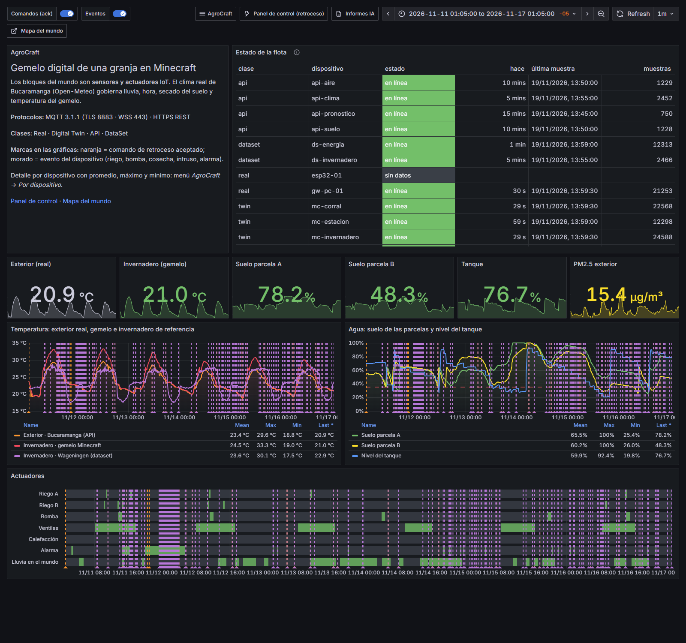
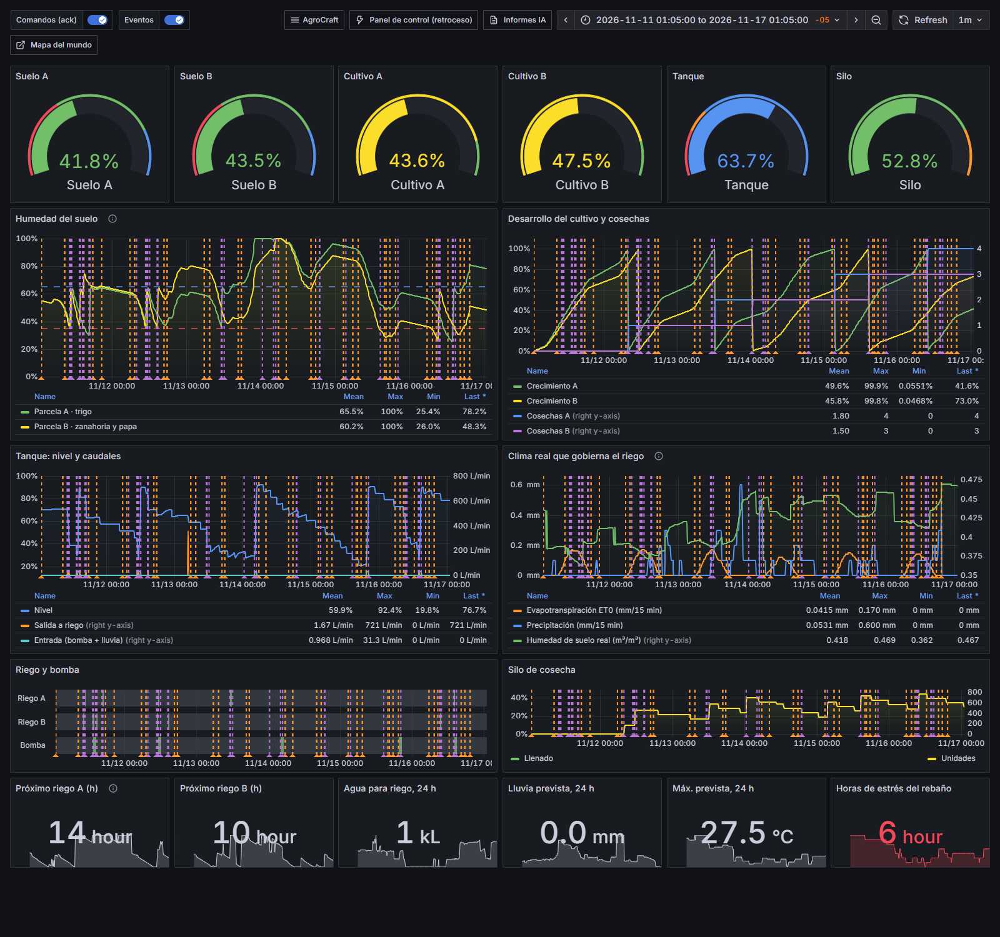
seq entre mensajes consecutivos.api-pronostico, que combina la previsión horaria con el modelo del gemelo).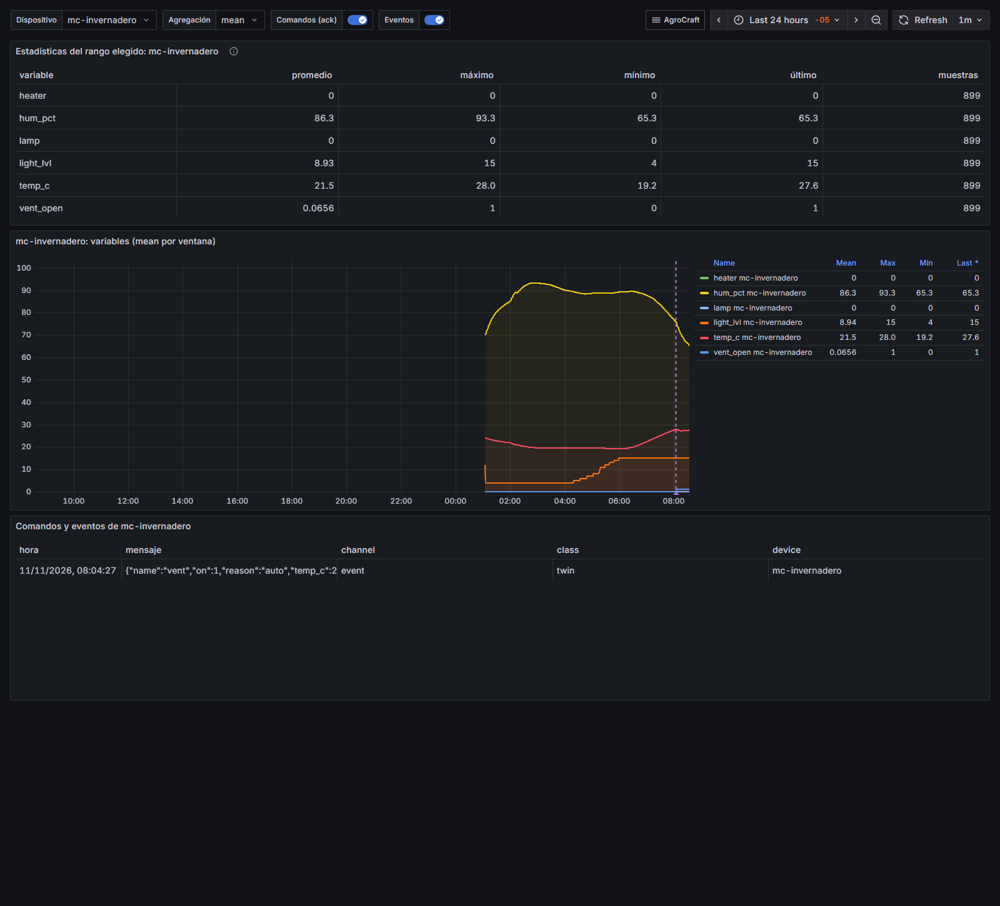
Alertas de Grafana (evaluadas cada minuto, una alerta independiente por dispositivo). Varias ejecutan un comando de retroceso al dispararse: el servicio de control recibe el webhook, ejecuta el comando, registra el evento y avisa por Telegram y Discord.
| Alerta (Grafana) | Condición | Acción automática |
|---|---|---|
| Suelo seco | soil_pct < 30 % por 10 min |
Devuelve el riego a automático |
| Estrés térmico (invernadero) | temp_c > 32 °C por 5 min |
Abre ventilas |
| Tanque bajo | level_pct < 20 % por 2 min |
Enciende la bomba |
| Intruso | hostiles_near > 0 |
Notificación |
| Dispositivo sin datos | sin muestras en 30 min | Notificación |
| Gemelo degradado | TPS < 15 por 5 min | Notificación |
| Estrés térmico del rebaño | THI > 78 por 15 min | Enciende aspersores |
| Bienestar animal bajo | bienestar < 40 % por 10 min | Notificación |
| Comedero vacío | comedero < 5 % por 10 min | Llena el comedero |
Reglas en la nube (servicio de control), que cruzan datos de dispositivos distintos: encender las lámparas de crecimiento de las parcelas en días nublados (radiación real < 150 W/m²) y cerrar las ventilas del invernadero si el aire exterior es malo (US AQI > 100), y riego según el pronóstico: con 5 mm o más de lluvia esperada en 24 h (probabilidad ≥ 70 %) baja el umbral de riego de las parcelas a 25 % y con menos de 2 mm lo devuelve a 35 %.
Detector de anomalías (servicio de control): cada 10 minutos compara el promedio de 30 minutos de 14 variables con la media y la desviación de esa misma hora en los días anteriores; con |z| ≥ 3 dos veces seguidas abre una anomalía y con |z| < 2 la cierra. También detecta sensores «pegados» (dos horas sin variación). Cada anomalía se publica como evento, llega a Telegram y Discord y entra al informe diario.
Control local en los gemelos, con histéresis: riego entre 35 y 65 % de humedad, bomba entre 25 y 90 % del tanque, ventilas entre 25 y 28 °C, calefacción bajo 16 °C, aspersores del corral sobre THI 75, comedero bajo 30 %, alarma ante hostiles.
Alertas registradas durante la captura:
| Hora | Estado | Alerta | Dispositivo | Detalle |
|---|---|---|---|---|
| 11 Nov 11:14 | firing | Estrés térmico en el invernadero | mc-invernadero |
|
| 11 Nov 14:02 | resolved | Estrés térmico en el invernadero | mc-invernadero |
|
| 11 Nov 14:39 | firing | Intruso en la granja | mc-seguridad |
|
| 11 Nov 14:59 | firing | Estrés térmico en el invernadero | mc-invernadero |
|
| 11 Nov 15:00 | firing | Dispositivo sin datos | api-aire |
|
| 11 Nov 15:01 | resolved | Estrés térmico en el invernadero | mc-invernadero |
|
| 11 Nov 15:40 | resolved | Dispositivo sin datos | api-aire |
|
| 11 Nov 16:19 | resolved | Intruso en la granja | mc-seguridad |
|
| 11 Nov 16:32 | firing | Suelo seco | mc-parcela-a |
Humedad del suelo de mc-parcela-a por debajo de 30 %: 29.6 % |
| 11 Nov 16:36 | resolved | Suelo seco | mc-parcela-a |
Humedad del suelo de mc-parcela-a por debajo de 30 %: 30.6 % |
| 11 Nov 19:57 | firing | Intruso en la granja | mc-seguridad |
2 criatura(s) hostil(es) dentro de la cerca |
| 11 Nov 23:57 | firing | Intruso en la granja | mc-seguridad |
3 criatura(s) hostil(es) dentro de la cerca |
| 12 Nov 03:57 | firing | Intruso en la granja | mc-seguridad |
2 criatura(s) hostil(es) dentro de la cerca |
| 12 Nov 03:59 | firing | Dispositivo sin datos | gw-pc-01 |
gw-pc-01 no envía datos hace 1816 s |
| 12 Nov 04:06 | firing | Comedero vacío | mc-corral |
Comedero del corral al 4 %: se intenta llenar desde el silo |
| 12 Nov 05:33 | resolved | Intruso en la granja | mc-seguridad |
0 criatura(s) hostil(es) dentro de la cerca |
| 12 Nov 07:54 | resolved | Comedero vacío | mc-corral |
Comedero del corral al 100 %: se intenta llenar desde el silo |
| 12 Nov 07:59 | firing | Dispositivo sin datos | gw-pc-01 |
gw-pc-01 no envía datos hace 16216 s |
| 12 Nov 08:53 | resolved | Dispositivo sin datos | gw-pc-01 |
gw-pc-01 no envía datos hace 16 s |
| 12 Nov 10:52 | firing | Estrés térmico en el invernadero | mc-invernadero |
Invernadero a 32.1 °C (umbral 32 °C): se abren las ventilas |
| 12 Nov 13:38 | resolved | Estrés térmico en el invernadero | mc-invernadero |
Invernadero a 32.0 °C (umbral 32 °C): se abren las ventilas |
| 13 Nov 02:24 | firing | Intruso en la granja | mc-seguridad |
1 criatura(s) hostil(es) dentro de la cerca |
| 13 Nov 02:32 | resolved | Intruso en la granja | mc-seguridad |
0 criatura(s) hostil(es) dentro de la cerca |
| 13 Nov 03:27 | firing | Intruso en la granja | mc-seguridad |
1 criatura(s) hostil(es) dentro de la cerca |
| 13 Nov 03:33 | resolved | Intruso en la granja | mc-seguridad |
0 criatura(s) hostil(es) dentro de la cerca |
| 13 Nov 11:16 | firing | Estrés térmico en el invernadero | mc-invernadero |
Invernadero a 32.1 °C (umbral 32 °C): se abren las ventilas |
| 13 Nov 12:18 | resolved | Estrés térmico en el invernadero | mc-invernadero |
Invernadero a 32.0 °C (umbral 32 °C): se abren las ventilas |
| 13 Nov 20:13 | firing | Intruso en la granja | mc-seguridad |
1 criatura(s) hostil(es) dentro de la cerca |
| 13 Nov 20:21 | resolved | Intruso en la granja | mc-seguridad |
0 criatura(s) hostil(es) dentro de la cerca |
| 13 Nov 23:40 | firing | Intruso en la granja | mc-seguridad |
1 criatura(s) hostil(es) dentro de la cerca |
| 13 Nov 23:46 | resolved | Intruso en la granja | mc-seguridad |
0 criatura(s) hostil(es) dentro de la cerca |
| 14 Nov 13:58 | firing | Dispositivo sin datos | gw-pc-01 |
gw-pc-01 no envía datos hace 1816 s |
| 14 Nov 15:16 | resolved | Dispositivo sin datos | gw-pc-01 |
gw-pc-01 no envía datos hace 16 s |
| 14 Nov 18:48 | firing | Intruso en la granja | mc-seguridad |
2 criatura(s) hostil(es) dentro de la cerca |
| 14 Nov 19:04 | resolved | Intruso en la granja | mc-seguridad |
0 criatura(s) hostil(es) dentro de la cerca |
| 14 Nov 20:09 | firing | Intruso en la granja | mc-seguridad |
1 criatura(s) hostil(es) dentro de la cerca |
| 14 Nov 20:17 | resolved | Intruso en la granja | mc-seguridad |
0 criatura(s) hostil(es) dentro de la cerca |
| 14 Nov 20:32 | firing | Intruso en la granja | mc-seguridad |
1 criatura(s) hostil(es) dentro de la cerca |
| 14 Nov 20:40 | resolved | Intruso en la granja | mc-seguridad |
0 criatura(s) hostil(es) dentro de la cerca |
| 14 Nov 22:53 | firing | Intruso en la granja | mc-seguridad |
1 criatura(s) hostil(es) dentro de la cerca |
| 14 Nov 23:01 | resolved | Intruso en la granja | mc-seguridad |
0 criatura(s) hostil(es) dentro de la cerca |
| 14 Nov 23:35 | firing | Intruso en la granja | mc-seguridad |
1 criatura(s) hostil(es) dentro de la cerca |
| 14 Nov 23:45 | resolved | Intruso en la granja | mc-seguridad |
0 criatura(s) hostil(es) dentro de la cerca |
| 15 Nov 02:15 | firing | Intruso en la granja | mc-seguridad |
1 criatura(s) hostil(es) dentro de la cerca |
| 15 Nov 02:23 | resolved | Intruso en la granja | mc-seguridad |
0 criatura(s) hostil(es) dentro de la cerca |
| 15 Nov 04:42 | firing | Intruso en la granja | mc-seguridad |
1 criatura(s) hostil(es) dentro de la cerca |
| 15 Nov 04:50 | resolved | Intruso en la granja | mc-seguridad |
0 criatura(s) hostil(es) dentro de la cerca |
| 15 Nov 16:00 | firing | Suelo seco | mc-parcela-b |
Humedad del suelo de mc-parcela-b por debajo de 30 %: 29.3 % |
| 15 Nov 18:38 | resolved | Suelo seco | mc-parcela-b |
Humedad del suelo de mc-parcela-b por debajo de 30 %: 30.0 % |
| 15 Nov 19:32 | firing | Tanque bajo | mc-tanque |
Tanque al 16.1 % (umbral 20 %): se enciende la bomba |
| 15 Nov 19:36 | resolved | Tanque bajo | mc-tanque |
Tanque al 21.1 % (umbral 20 %): se enciende la bomba |
| 15 Nov 20:32 | firing | Intruso en la granja | mc-seguridad |
1 criatura(s) hostil(es) dentro de la cerca |
| 15 Nov 20:38 | resolved | Intruso en la granja | mc-seguridad |
0 criatura(s) hostil(es) dentro de la cerca |
| 15 Nov 22:01 | firing | Intruso en la granja | mc-seguridad |
1 criatura(s) hostil(es) dentro de la cerca |
| 15 Nov 22:07 | resolved | Intruso en la granja | mc-seguridad |
0 criatura(s) hostil(es) dentro de la cerca |
| 16 Nov 00:55 | firing | Intruso en la granja | mc-seguridad |
1 criatura(s) hostil(es) dentro de la cerca |
| 16 Nov 01:01 | resolved | Intruso en la granja | mc-seguridad |
0 criatura(s) hostil(es) dentro de la cerca |
| 16 Nov 01:46 | firing | Intruso en la granja | mc-seguridad |
1 criatura(s) hostil(es) dentro de la cerca |
| 16 Nov 01:56 | resolved | Intruso en la granja | mc-seguridad |
0 criatura(s) hostil(es) dentro de la cerca |
| 16 Nov 03:39 | firing | Intruso en la granja | mc-seguridad |
1 criatura(s) hostil(es) dentro de la cerca |
| 16 Nov 03:45 | resolved | Intruso en la granja | mc-seguridad |
0 criatura(s) hostil(es) dentro de la cerca |
| 16 Nov 08:41 | firing | Suelo seco | mc-parcela-b |
Humedad del suelo de mc-parcela-b por debajo de 30 %: 29.0 % |
| 16 Nov 09:23 | resolved | Suelo seco | mc-parcela-b |
Humedad del suelo de mc-parcela-b por debajo de 30 %: 32.7 % |
| 16 Nov 12:29 | firing | Suelo seco | mc-parcela-a |
Humedad del suelo de mc-parcela-a por debajo de 30 %: 29.4 % |
| 16 Nov 14:03 | resolved | Suelo seco | mc-parcela-a |
Humedad del suelo de mc-parcela-a por debajo de 30 %: 30.6 % |
| 16 Nov 19:18 | firing | Intruso en la granja | mc-seguridad |
1 criatura(s) hostil(es) dentro de la cerca |
| 16 Nov 19:28 | resolved | Intruso en la granja | mc-seguridad |
0 criatura(s) hostil(es) dentro de la cerca |
| 16 Nov 21:11 | firing | Intruso en la granja | mc-seguridad |
1 criatura(s) hostil(es) dentro de la cerca |
| 16 Nov 21:21 | resolved | Intruso en la granja | mc-seguridad |
0 criatura(s) hostil(es) dentro de la cerca |
/map/): vista del mundo con un marcador por gemelo, coloreado según su estado./iot/reportes/): análisis diario redactado por un modelo de lenguaje (DeepSeek V4.1 Flash vía TokenHarbor) a partir de las estadísticas.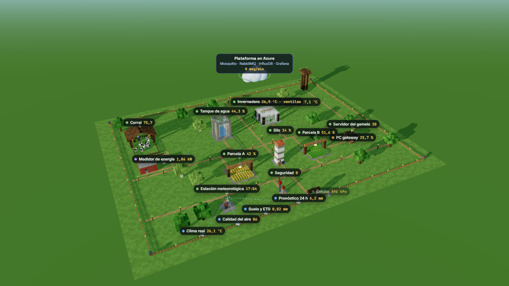
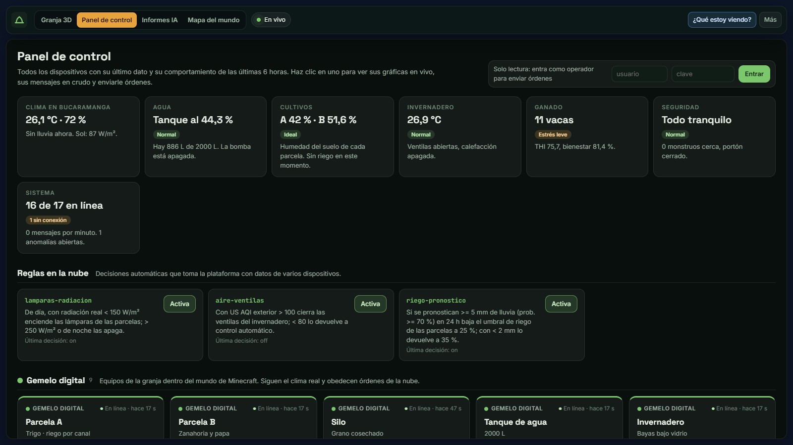
Todos los dispositivos, de las cuatro clases, aceptan los mismos comandos básicos:
| Comando | Efecto |
|---|---|
set_enabled |
Apaga o enciende el envío de datos |
set_interval |
Cambia el periodo de muestreo (5 s a 1 h) |
calibrate |
Aplica offset y ganancia a una variable (o borra la calibración) |
reboot |
Restablece la configuración de fábrica |
set_actuator |
Riego, lámparas, ventilas, calefacción, bomba, alarma, portón, aspersores, comedero, proceso |
set_config |
Umbrales y modo automático de cada gemelo |
set_weather, set_time |
Clima y hora del mundo (estación) |
set_location, set_speed, restart |
Ubicación consultada (API) y reproducción (DataSet) |
Los comandos llegan por cinco vías: el panel web, la línea de comandos (scripts/cmd.sh), las reglas de
la nube, las alertas de Grafana y las palancas dentro del mundo. Cada uno queda registrado con su
cmd_id, su origen y la respuesta del dispositivo.
Durante la captura se ejecutaron experimentos planificados, con hora, motivo y reversión programada
(docs/experimentos/experimentos.csv):
| Hora | Exp. | Fase | Dispositivo | Acción | Parámetros | Ack | Propósito |
|---|---|---|---|---|---|---|---|
| 11-11 14:37 | E0 | inicio | mc-invernadero |
set_config | {"auto":1} |
ok | Corrección: la alerta de estrés térmico de las 11:14 dejó el invernadero en manual con ventilas abiertas |
| 11-11 14:37 | E1 | inicio | api-aire |
set_enabled | {"enabled":0} |
ok | Apagar el sensor de calidad del aire 60 min: hueco esperado en la gráfica y alerta Dispositivo sin datos a los |
| 11-11 14:37 | E2 | inicio | ds-invernadero |
calibrate | {"variable":"temp_c","offset":3} |
ok | Descalibrar +3 °C la temperatura del invernadero de referencia durante 30 min: escalón visible |
| 11-11 14:37 | E3 | inicio | mc-parcela-a |
set_interval | {"interval_s":5} |
ok | Subir la frecuencia de muestreo de 30 s a 5 s durante 15 min: más puntos por minuto |
| 11-11 14:37 | E4 | inicio | mc-parcela-b |
set_config | {"soil_min":60,"soil_max":75} |
ok | Subir los umbrales de riego de B (35/65 a 60/75) por 2 h: el riego arranca de inmediato y baja el tanque |
| 11-11 14:37 | E5 | inicio | mc-parcela-a |
set_config | {"auto":0} |
ok | Sacar el riego de A de automático: el suelo baja de 30 %, debe dispararse la alerta Suelo seco y su comando de |
| 11-11 14:37 | E6 | inicio | mc-estacion |
set_weather | {"weather":"thunder"} |
ok | Forzar tormenta en el mundo 20 min (desacople del clima real) |
| 11-11 14:37 | E7 | inicio | mc-seguridad |
set_actuator | {"name":"alarm","value":1} |
ok | Encender la alarma por comando 5 min (lámpara roja y campana en el mundo) |
| 11-11 14:37 | E8 | inicio | mc-seguridad |
set_actuator | {"name":"gate","value":1} |
ok | Abrir el portón por comando 5 min |
| 11-11 14:39 | E9 | inicio | mc-invernadero |
palanca (jugador MARCOS_V22) | {"name":"vent","value":0} |
ok | Retroceso iniciado desde el juego: el jugador cierra las ventilas con la palanca |
| 11-11 14:39 | E9 | inicio | mc-invernadero |
palanca (jugador MARCOS_V22) | {"name":"vent","value":1} |
ok | Retroceso iniciado desde el juego: el jugador abre las ventilas con la palanca |
| 11-11 14:39 | E9 | reversion | mc-invernadero |
set_config | {"auto":1} |
ok | Fin de E9: el invernadero vuelve a control automático |
| 11-11 14:43 | E8 | reversion | mc-seguridad |
set_actuator | {"name":"gate","value":0} |
ok | Reversión automática de E8 tras 5 min |
| 11-11 14:43 | E7 | reversion | mc-seguridad |
set_config | {"alarm":0,"auto":1} |
ok | Reversión automática de E7 tras 5 min |
| 11-11 14:52 | E3 | reversion | mc-parcela-a |
set_interval | {"interval_s":30} |
ok | Reversión automática de E3 tras 15 min |
| 11-11 14:57 | E6 | reversion | mc-estacion |
set_config | {"sync_weather":1} |
ok | Reversión automática de E6 tras 20 min |
| 11-11 15:07 | E2 | reversion | ds-invernadero |
calibrate | {"reset":true} |
ok | Reversión automática de E2 tras 30 min |
| 11-11 15:37 | E1 | reversion | api-aire |
set_enabled | {"enabled":1} |
ok | Reversión automática de E1 tras 60 min |
| 11-11 16:32 | E5 | resultado | mc-parcela-a |
alerta Suelo seco -> set_config | {"auto":1} |
ok | Ciclo cerrado: alerta de Grafana ejecuta el comando y el gemelo vuelve a regar solo |
| 11-11 16:37 | E4 | reversion | mc-parcela-b |
set_config | {"soil_min":35,"soil_max":65} |
ok | Reversión automática de E4 tras 120 min |
| 11-11 20:37 | E5 | reversion | mc-parcela-a |
set_config | {"auto":1} |
ok | Reversión automática de E5 tras 360 min |
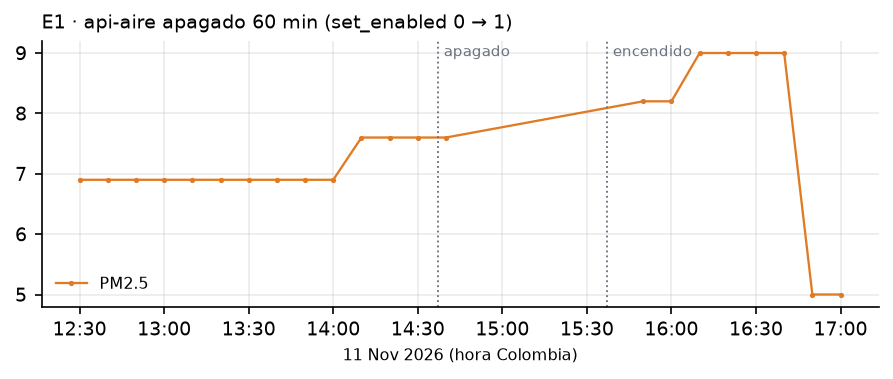
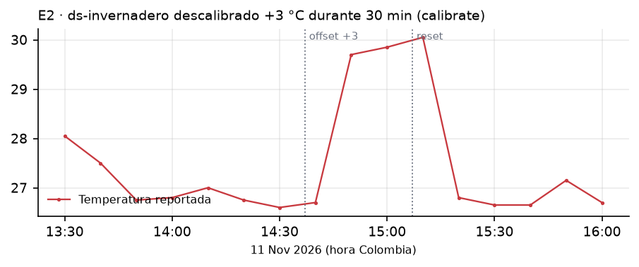
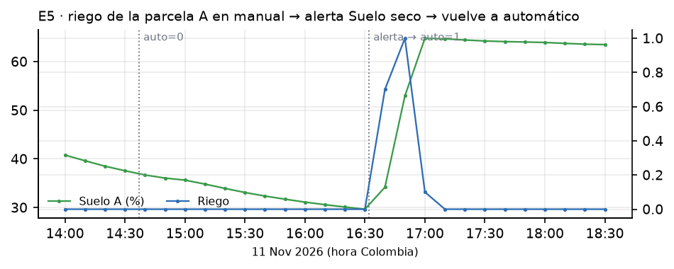
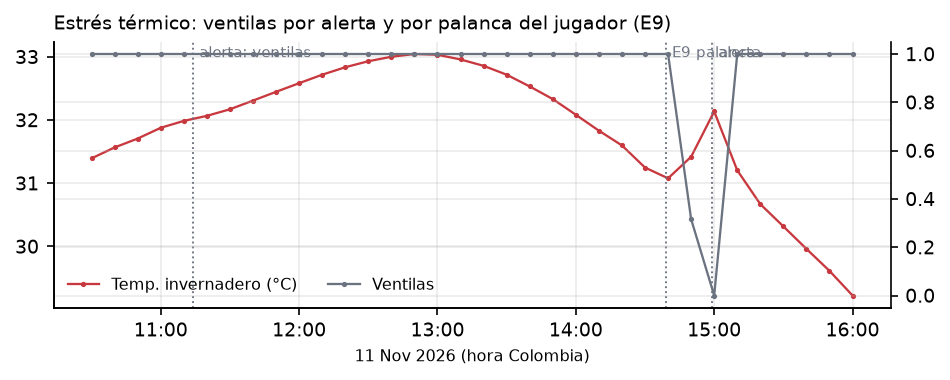
Junto a la granja real, a 80 bloques, hay una copia simulada con el mismo modelo pero con reloj
acelerado (hasta 360 veces: un día en 4 minutos) y entradas sintéticas en lugar del clima real. Cada
simulación parte del estado actual de la granja real, así responde a la pregunta "¿qué pasaría desde
aquí si…?". Sus datos van a una medición aparte (simulation), de modo que nunca se mezclan con la
captura real ni disparan alertas.
| Escenario | Qué cambia |
|---|---|
actual |
Día típico desplazado al clima real del momento de inicio |
normal |
Día típico de Bucaramanga (17-28 °C, chubasco a las 16:00) |
ola_calor |
+7 °C, −20 % de humedad, sin lluvia |
sequia |
Sin lluvia, ET0 × 2,2, aire más seco |
tormenta |
Lluvia de 18 mm/h la primera hora, radiación baja |
helada |
Temperatura entre 2 y 10 °C |
falla_bomba |
La bomba del tanque no entrega agua |
intrusion |
Intrusiones frecuentes a cualquier hora |
Se escribió una batería de pruebas (scripts/sim_test.py) con criterios definidos antes de correr
cada escenario; todos los escenarios cumplen sus criterios:
| Escenario | Horas simuladas | Criterios cumplidos | Ejemplos de lo observado |
|---|---|---|---|
| actual | 24 | 4/4 | Ciclo diario de temperatura (amplitud > 8 °C): 11.0; Radiación 0 de noche y > 600 W/m² de día: (0.0, 806.762); El riego automático actúa y el suelo termina ≥ 33 |
| normal | 24 | 5/5 | Ciclo diario de temperatura (amplitud > 8 °C): 11.0; Radiación 0 de noche y > 600 W/m² de día: (0.0, 806.001); El riego automático actúa y el suelo termina ≥ 33 |
| ola_calor | 24 | 5/5 | Exterior supera 34 °C: 35.0; Invernadero supera 32 °C: 40.3; Se abren las ventilas en automático: 3 |
| sequia | 36 | 5/5 | ET0 máxima mayor a la del día normal (×1.8): (1.93, 0.64); Sin lluvia: 0.0; Más riegos que en el día normal (por hora): (12, 0.20833333333333334) |
| tormenta | 12 | 5/5 | Lluvia fuerte (≥ 18 mm/h): 18.0; Entra agua al tanque por lluvia: 12.0; El suelo se moja (> 90 %): 100.0 |
| helada | 24 | 4/4 | Exterior baja de 3 °C: 2.0; Se enciende la calefacción: 10; El invernadero queda por encima del exterior (mín.): (8.0, 2.0) |
| falla_bomba | 48 | 5/5 | La falla queda registrada (pump_failure = 1): 1.0; El tanque se vacía (< 5 %): 0.0; La bomba se ordena pero no entra agua: (1.0, 1.33) |
| intrusion | 12 | 4/4 | Aparece un intruso: 6; Se detecta (hostiles_near > 0): 1.0; Suena la alarma en automático: 6 |
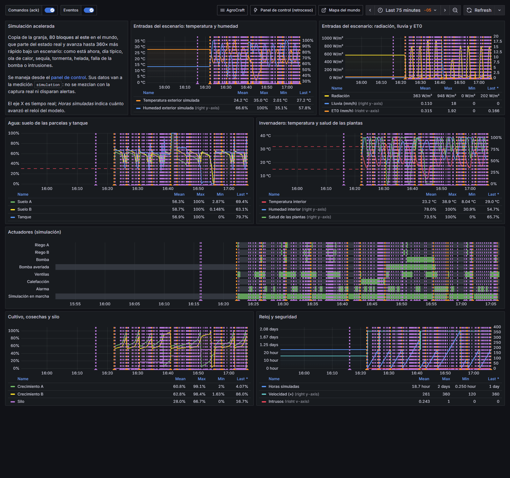
Lo que enseña la simulación. Con una ola de calor el invernadero llega a 38-40 °C aun con las ventilas abiertas y las plantas mueren en un día: las ventilas no bastan y haría falta sombra o enfriamiento evaporativo. Con la bomba averiada el tanque se vacía y el suelo se seca por completo en dos días. Con una tormenta el riego se detiene solo y el tanque se recarga. Estas conclusiones salen del mismo modelo que corre la granja real, con los mismos umbrales.
Este análisis fue redactado con asistencia de inteligencia artificial (Claude, de Anthropic) a partir de las estadísticas exportadas de InfluxDB para la ventana 11 Nov 2026 01:10 – 17 Nov 2026 01:05 (hora Colombia), y cada afirmación se verificó contra su gráfica. Todas las cifras de esta sección se recalculan automáticamente desde los datos. Además, el sistema genera cada día un informe automático con IA en
/iot/reportes/. Las zonas grises de las gráficas son huecos de más de 30 minutos sin datos.
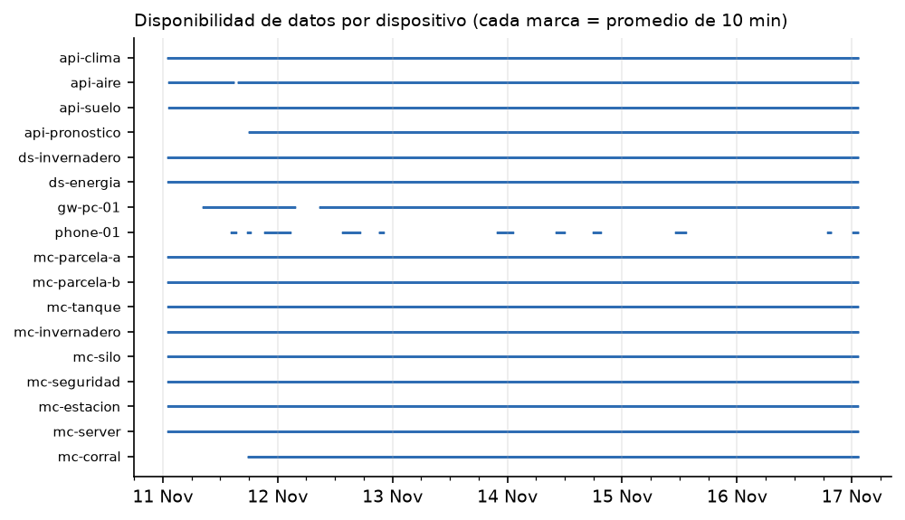
Los nueve gemelos, los dos datasets y las cuatro APIs reportaron de forma continua. Sus únicos cortes
fueron de alrededor de un minuto, por los reinicios del servidor al instalar nuevas versiones del plugin
(registrados en la bitácora), y uno intencional: el experimento E1 apagó api-aire durante una hora.
Los dos dispositivos reales muestran el comportamiento esperable de un equipo físico: el PC deja de
reportar cuando se apaga y el celular solo envía mientras la app está grabando.
| Dispositivo | Desde | Minutos |
|---|---|---|
api-aire |
11 Nov 14:30 | 70 |
api-clima |
16 Nov 10:30 | 20 |
gw-pc-01 |
11 Nov 22:59 | 4 |
gw-pc-01 |
12 Nov 03:29 | 322 |
phone-01 |
11 Nov 14:17 | 3 |
phone-01 |
11 Nov 15:05 | 157 |
phone-01 |
11 Nov 18:03 | 194 |
phone-01 |
12 Nov 02:20 | 676 |
phone-01 |
12 Nov 16:53 | 257 |
phone-01 |
12 Nov 21:54 | 1438 |
phone-01 |
14 Nov 00:54 | 560 |
phone-01 |
14 Nov 11:44 | 366 |
phone-01 |
14 Nov 19:14 | 958 |
phone-01 |
15 Nov 13:07 | 1792 |
phone-01 |
16 Nov 19:22 | 289 |
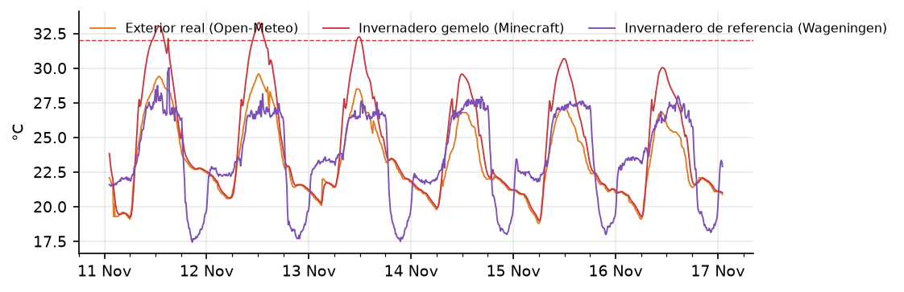
La temperatura exterior siguió un ciclo diario regular entre 18.8 °C (madrugada) y 29.6 °C (primeras horas de la tarde), con un promedio de 23.3 °C. El invernadero gemelo reproduce ese ciclo con un desfase de minutos y una ganancia solar de 3 a 4 °C en las horas de sol: alcanzó 33.3 °C mientras afuera hacía como máximo 29.6 °C. Cuando pasa de 28 °C abre sus ventilas y la curva se aplana. De noche, sin radiación, las dos curvas coinciden. El invernadero real de Wageningen (dataset) muestra un régimen distinto: calefacción controlada que lo mantiene cerca de 22-27 °C de día y caídas nocturnas hasta 17.4 °C. Es el comportamiento de un invernadero holandés en primavera, que sirve de contraste con el clima tropical de montaña.
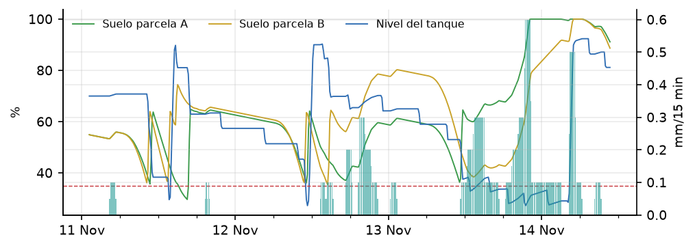
El riego automático mantuvo las parcelas entre 35 y 65 % de humedad. Cada parcela se secó despacio de noche y rápido al mediodía, por la evapotranspiración real (ET0 de hasta 0.17 mm cada 15 min). Cuando bajaban de 35 % se abría el riego y el tanque bajaba en escalones; la bomba lo rellenaba al pasar de 25 %. Las lluvias reales de las tardes del 13 y 14 de noviembre (hasta 0.6 mm cada 15 min) se ven en la gráfica: el suelo subió solo hasta saturarse y el tanque se recargó sin bomba. La parcela B, que se seca 25 % más rápido, necesitó más riegos que la A. El único momento en que el suelo bajó de 30 % fue el experimento E5 (mínimo 25.0 %), que terminó con la alerta "Suelo seco" devolviendo el riego a automático.
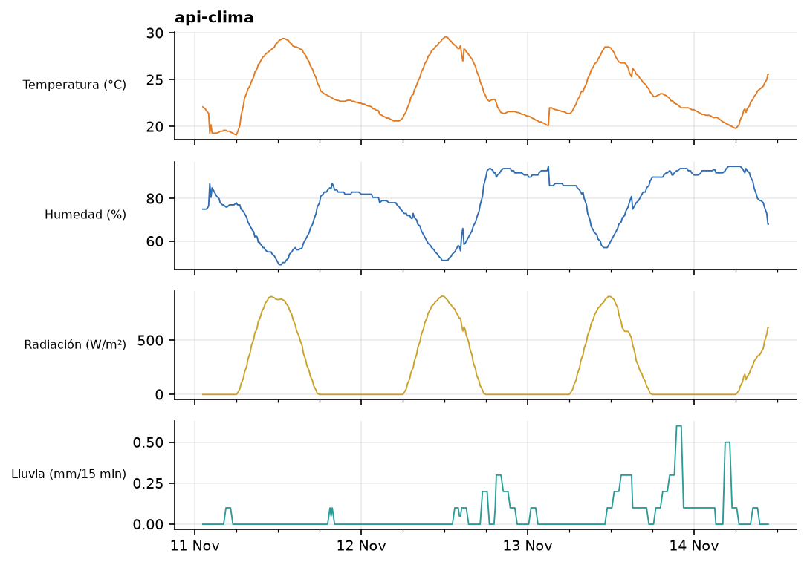
La humedad relativa fue inversa a la temperatura: entre 49 % a mediodía y 98 % de madrugada. La radiación solar llegó a 908 W/m² en días despejados y se recortó en las tardes nubladas. La presión se mantuvo estable alrededor de 907.9 hPa, lo esperable a unos 960 m de altitud.
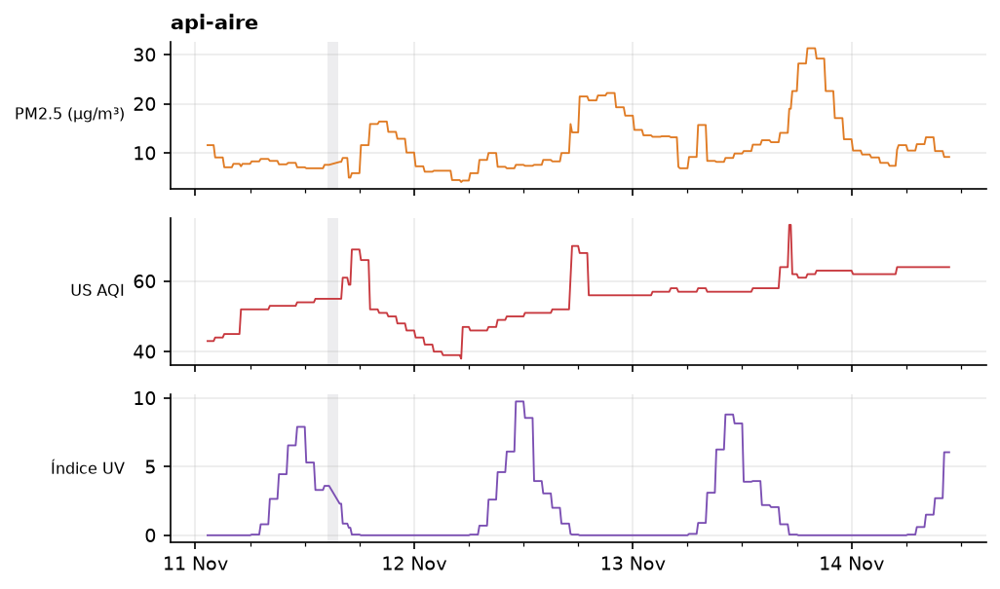
La calidad del aire fue buena a moderada: PM2.5 promedio de 12.2 µg/m³ (máximo 31.3) y US AQI entre 38 y 76. Nunca se activó la regla que cierra las ventilas (AQI > 100). El índice UV llegó a 9.8 al mediodía. El hueco del 11 de noviembre es el experimento E1.
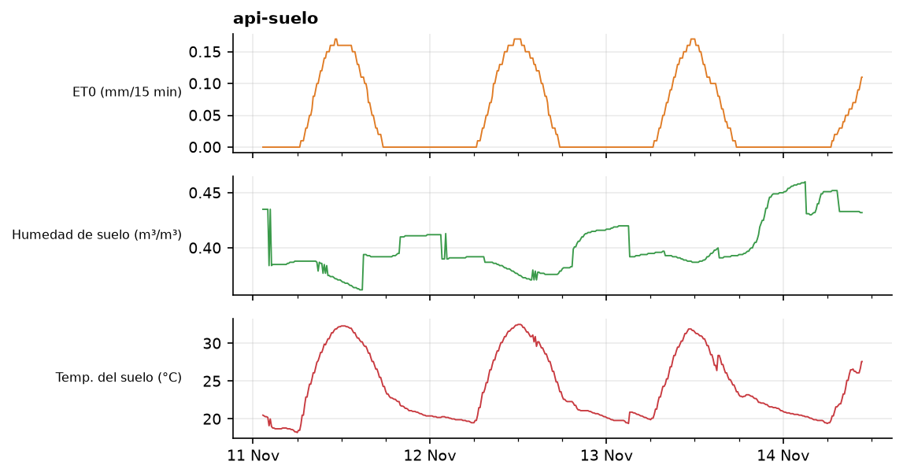
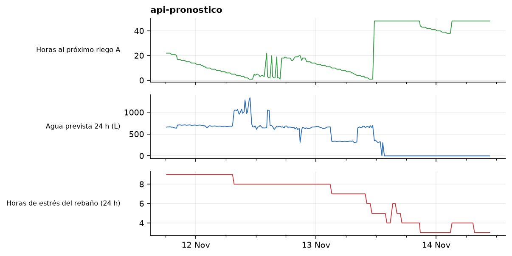
El pronóstico anticipó entre 2 y 9 horas diarias de estrés térmico para el rebaño (THI > 75) y máximas de 26.4 a 29.6 °C. Las horas al próximo riego bajan como una rampa hasta 1 h justo antes de cada riego real, y saltan a 48 h (el horizonte) después de las lluvias, cuando el modelo no prevé riego en dos días.
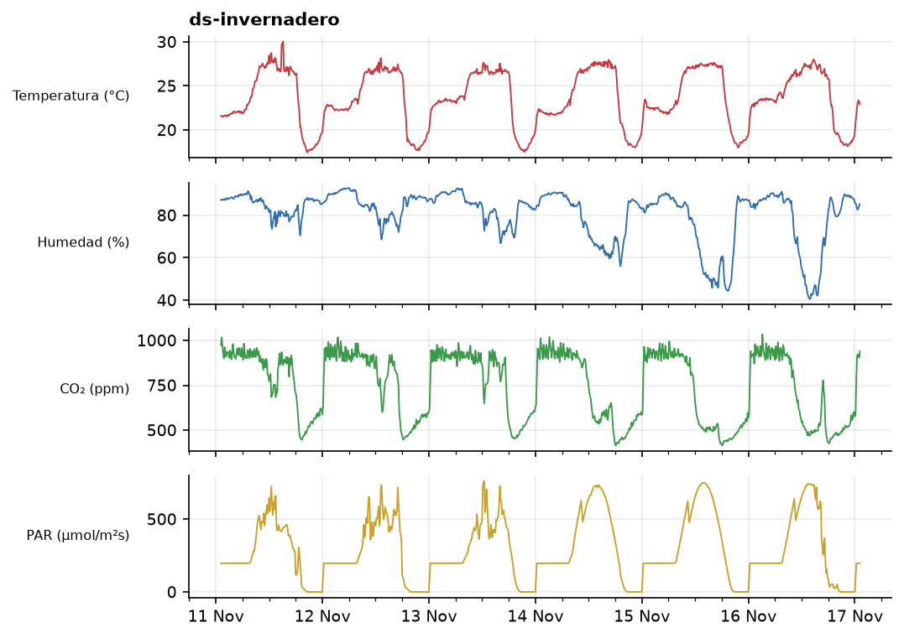
El invernadero de referencia muestra la operación de un invernadero comercial: CO₂ enriquecido de día (hasta 1052 ppm) que baja al ventilar, luz PAR con ciclo diario de hasta 825 µmol/m²s y humedad alta (promedio 80 %). El escalón de +3 °C del 11 de noviembre a las 14:37 es la descalibración del experimento E2.
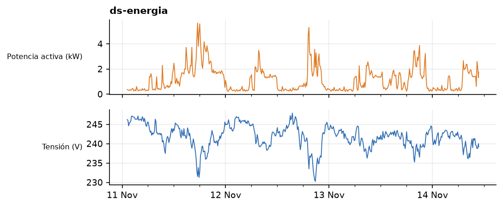
La potencia promedio fue 1.28 kW, con picos de hasta 8.7 kW en las noches (cocina y calefacción de la vivienda original). Se ve la caída de tensión ante las cargas altas: cada pico de potencia coincide con una baja de tensión, que llegó a 225.8 V frente a un promedio de 241.4 V.
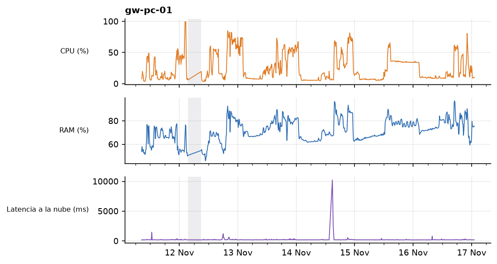
El PC trabajó con CPU promedio de 25 % y RAM de 72 %, con jornadas de uso intenso y noches de reposo. La latencia hacia la VM en Azure (Estados Unidos) fue estable, alrededor de 200 ms, con picos aislados de más de un segundo propios de una conexión doméstica. El hueco gris es una noche con el equipo apagado: un dispositivo real deja de reportar cuando se apaga, y la alerta "Dispositivo sin datos" lo detecta.
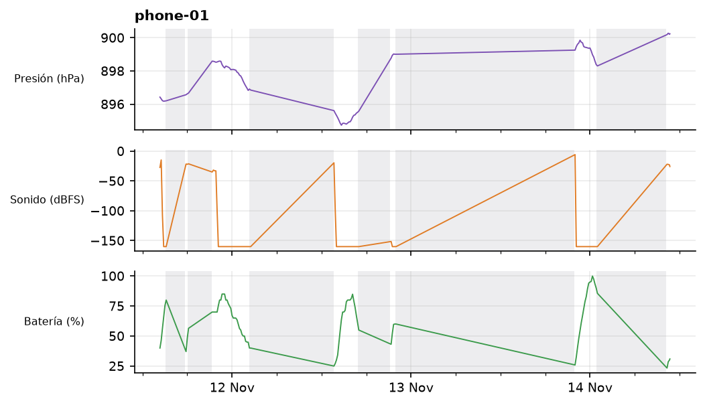
El celular solo transmite mientras Sensor Logger graba, por eso sus datos llegan en sesiones. La presión medida (promedio 898.0 hPa) es unos 10 hPa menor que la de Open-Meteo para Bucaramanga: el teléfono está más alto que el punto de referencia del modelo. Los dos sensores siguen la misma tendencia. El micrófono distingue silencio (−160 dBFS, el piso del sensor) de actividad, y la batería muestra los ciclos de carga y descarga del día.
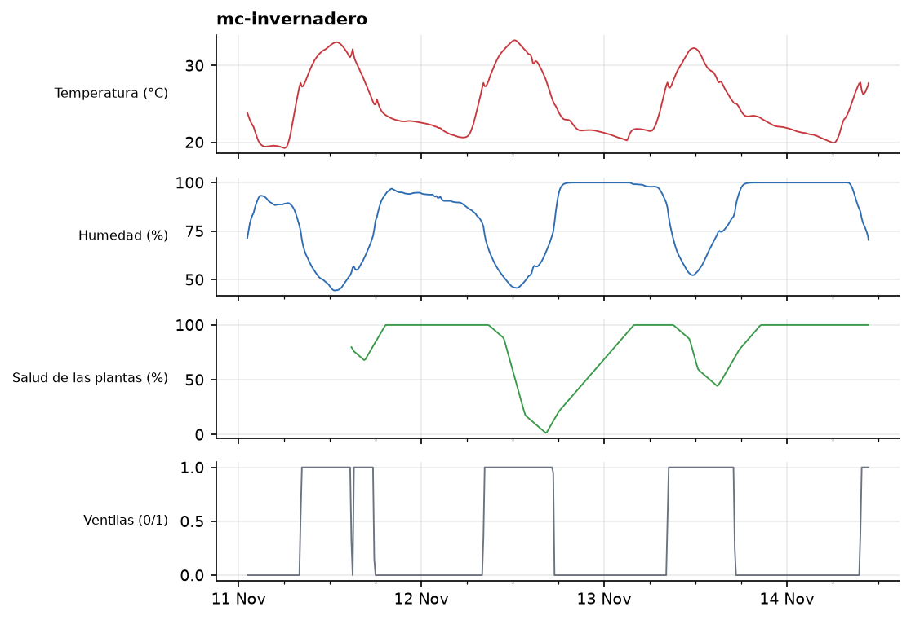
El invernadero gemelo abrió sus ventilas cada mediodía al pasar de 28 °C y las cerró al bajar de 25 °C. Aun así superó 32 °C varias horas el 11 y el 12 de noviembre; esa tarde la salud de las plantas cayó hasta 1 % (los arbustos perdieron sus frutos en el mundo) y se recuperó en las noches frescas. Es la misma conclusión que dio la simulación de ola de calor: las ventilas solas no bastan en las horas de mayor radiación. Las noches lluviosas del 13 y 14 saturaron la humedad interior al 100 %.
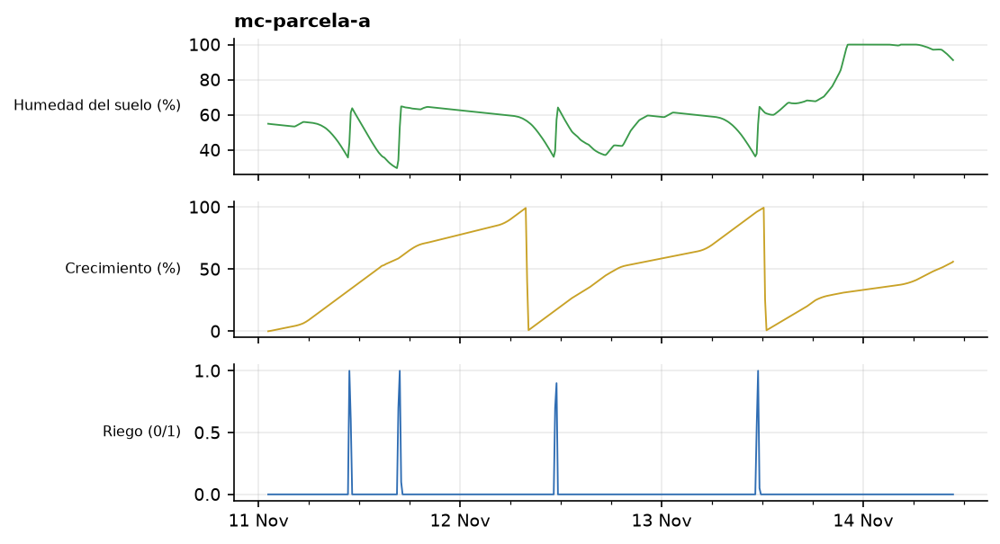
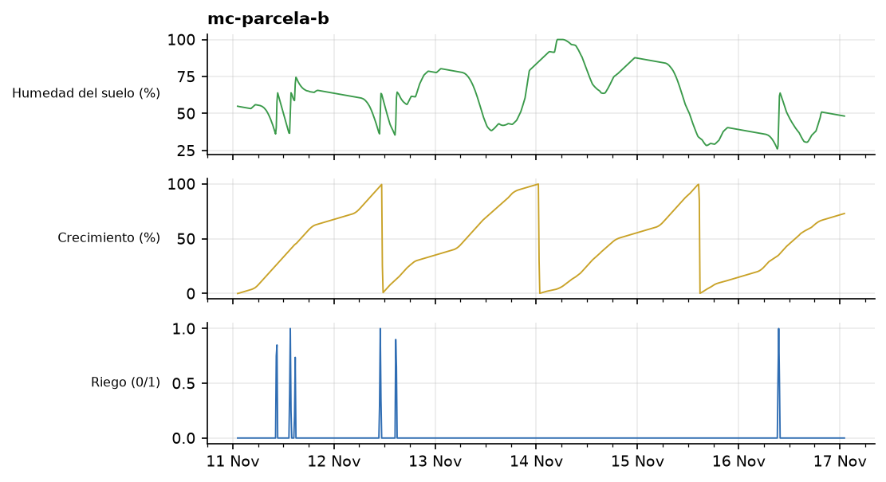
Cada parcela completó 4 cosechas en la ventana: el crecimiento sube como rampa, más rápido con suelo húmedo y sol, y vuelve a cero al cosechar. Los pulsos azules son los riegos automáticos, más frecuentes en la parcela B.
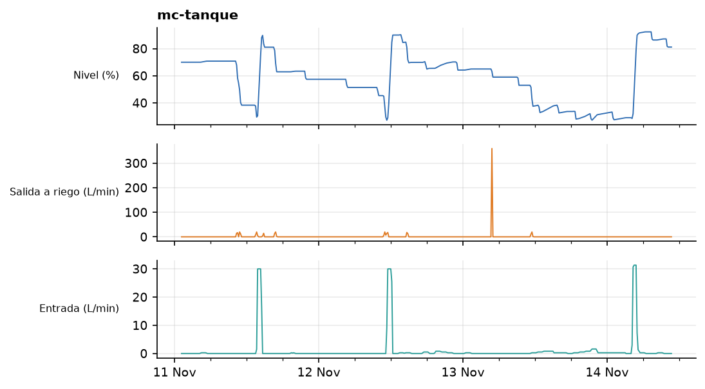
El tanque osciló entre 16 % y 92 %. Cada riego se ve como una salida de 20 L/min y cada arranque de la bomba como una entrada de 30 L/min. Las lluvias reales aportaron entradas menores sin bomba.
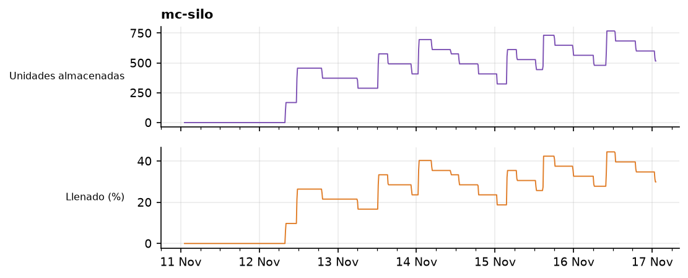
El silo recibió las cosechas de trigo y zanahoria y entregó trigo al comedero del corral. Llegó a 768 unidades (44 % de su capacidad) sin alcanzar el 80 % que dispara la descarga automática.
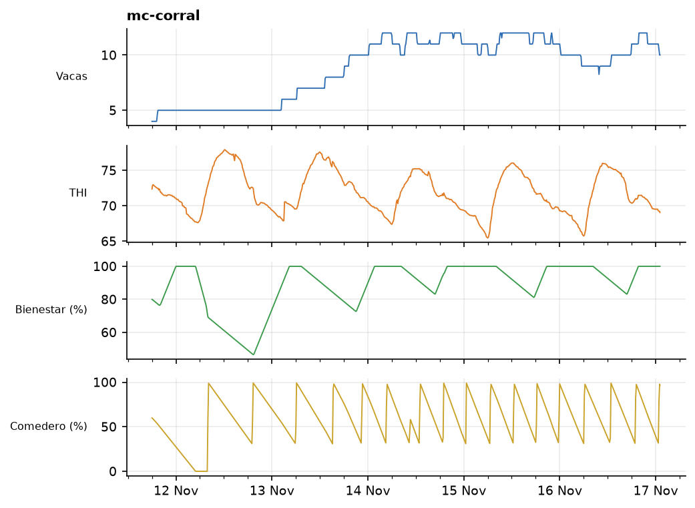
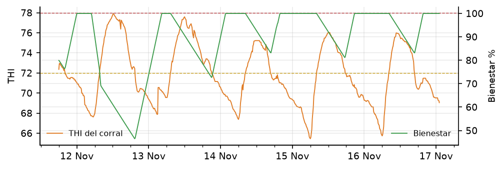
El rebaño creció de 4 a 12 vacas (23 nacimientos). Al superar el objetivo de 8 adultas, la planta de proceso entregó 51 unidades de carne asada a la cámara. El THI siguió el ciclo del clima real, entre 65.5 y 77.9: todas las tardes entró en zona de alerta (> 72) y rozó la de peligro (78). El bienestar bajó en esas tardes y se recuperó de noche.
La caída más fuerte (a 46 %) ocurrió la madrugada del 12 de noviembre: el comedero se vació porque en el silo todavía no había trigo. El análisis de los eventos reveló además un error: mientras el silo estaba vacío, el comedero publicaba un evento de reintento cada segundo (más de 30 000 en la ventana). Se corrigió en la versión 0.6.1 del plugin: ahora usa zanahoria como forraje y avisa una sola vez.
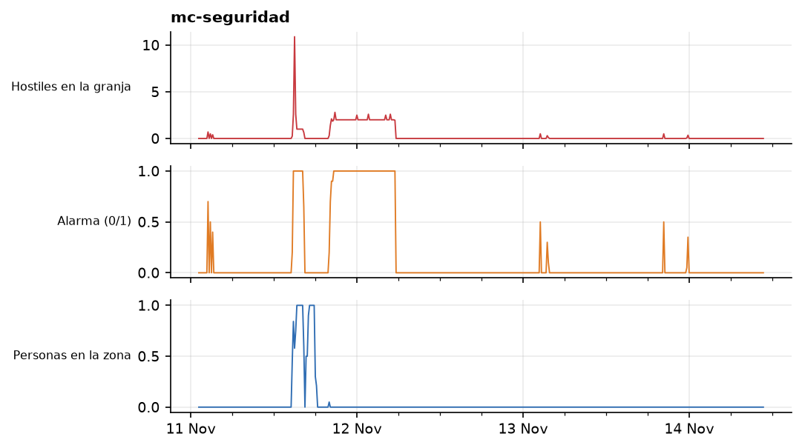
Hubo 25 intrusiones simuladas, todas detectadas, con alarma automática y alerta "Intruso en la granja". El pico de 11 hostiles del 11 de noviembre coincide con la visita de un jugador: en Minecraft las criaturas aparecen cerca de los jugadores. Las dos que quedaron esa noche mantuvieron la alarma encendida hasta el amanecer, cuando el sol las eliminó.
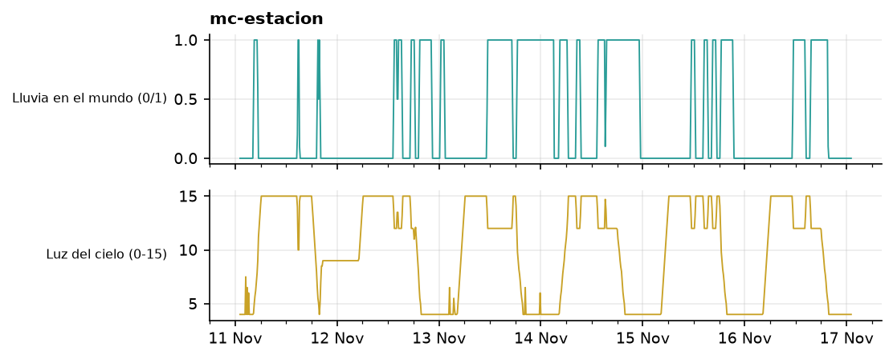
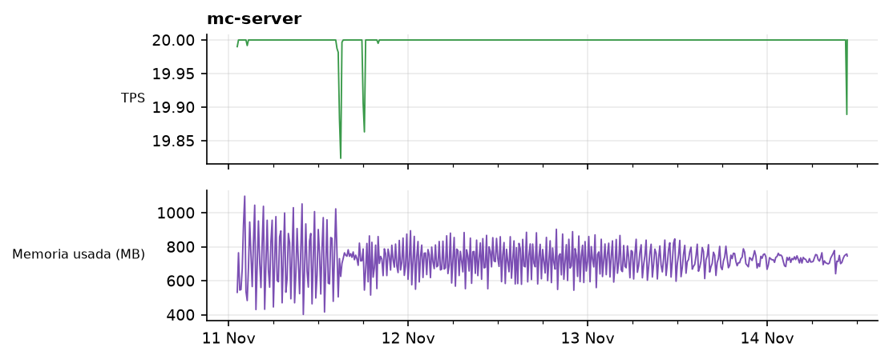
El servidor del gemelo mantuvo 20.0 TPS de promedio (el máximo es 20), con un mínimo de 15.4 durante un reinicio. La memoria osciló entre 244 y 1290 MB por la recolección de basura de Java. La VM de 4 GiB alcanza para las dos granjas, la plataforma y los servicios.
cmd_id y su respuesta.